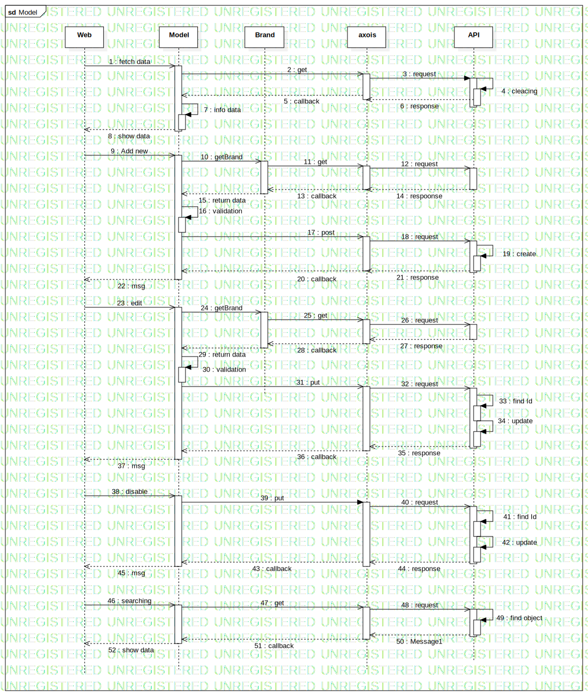

Interaction1
UMLInteraction
Models
::
Model
::
Interaction1
Description
none
Diagrams

Model
Participants
Web
Model
Brand
axois
API
Messages
fetch data (Web→Model)
get (Model→axois)
request (axois→API)
cleacing (API→API)
callback (axois→Model)
response (API→axois)
info data (Model→Model)
show data (Model→Web)
Add new (Web→Model)
getBrand (Model→Brand)
get (Brand→axois)
request (axois→API)
callback (axois→Brand)
respoonse (API→axois)
return data (Brand→Model)
validation (Model→Model)
post (Model→axois)
request (axois→API)
create (API→API)
callback (axois→Model)
response (API→axois)
msg (Model→Web)
edit (Web→Model)
getBrand (Model→Brand)
get (Brand→axois)
request (axois→API)
response (API→axois)
callback (axois→Brand)
return data (Brand→Model)
validation (Model→Model)
put (Model→axois)
request (axois→API)
find Id (API→API)
update (API→API)
response (API→axois)
callback (axois→Model)
msg (Model→Web)
disable (Web→Model)
put (Model→axois)
request (axois→API)
find Id (API→API)
update (API→API)
callback (axois→Model)
response (API→axois)
msg (Model→Web)
searching (Web→Model)
get (Model→axois)
request (axois→API)
find object (API→API)
Message1 (API→axois)
callback (axois→Model)
show data (Model→Web)
Properties
Name
Value
name
Interaction1
stereotype
null
visibility
public
isReentrant
true
Owned Elements
Model